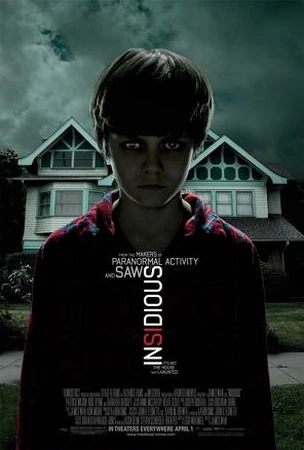
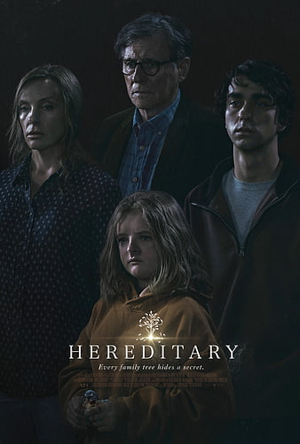
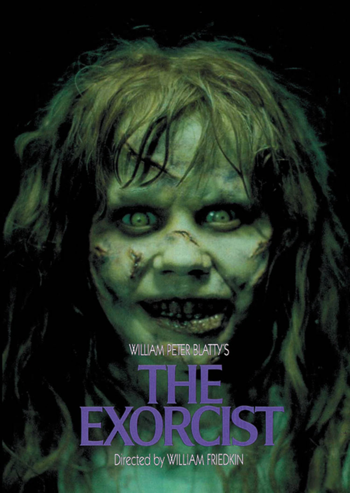
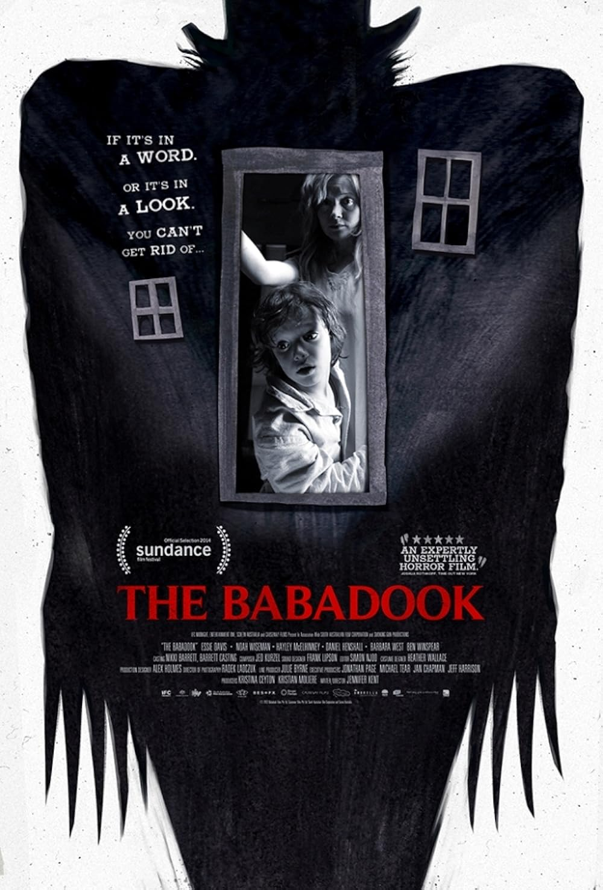
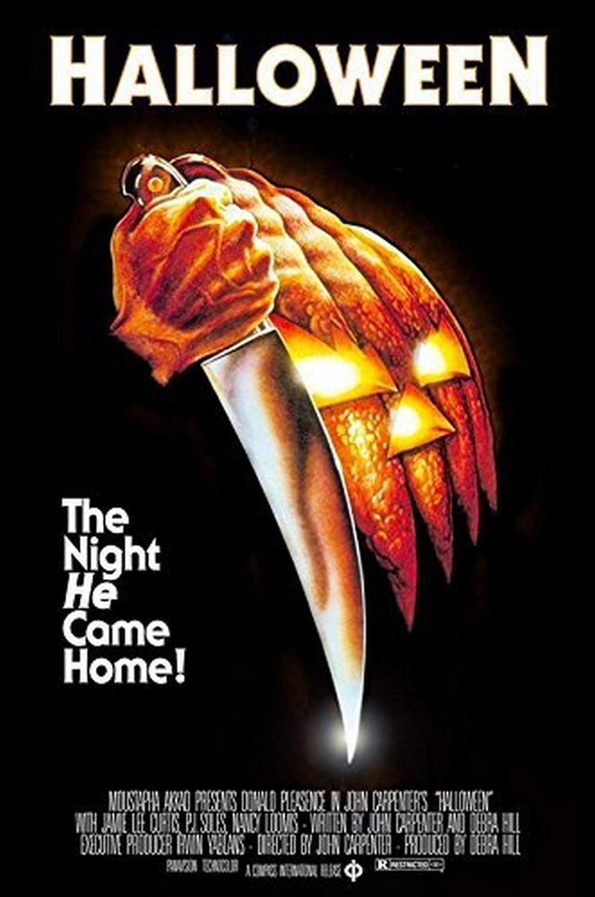
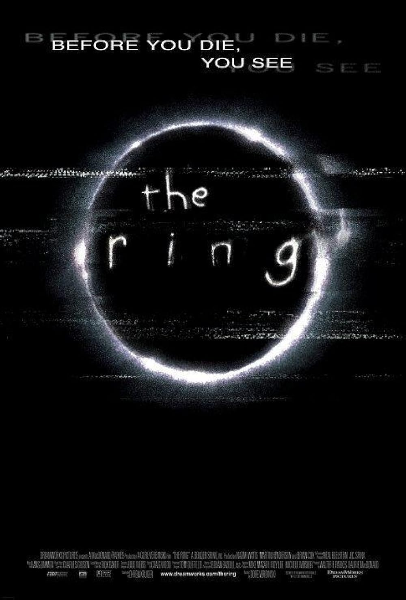
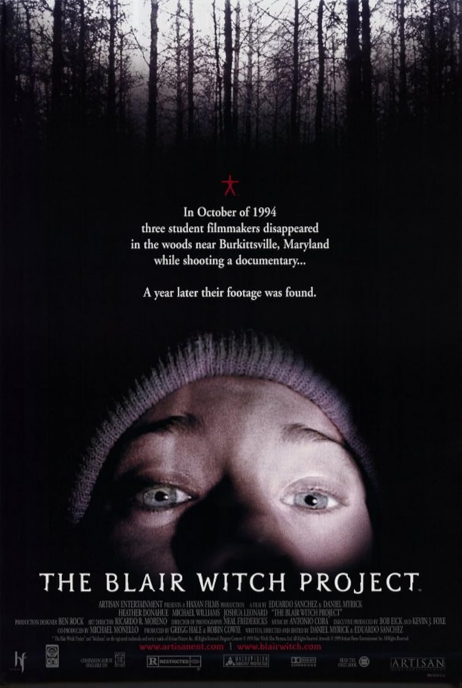
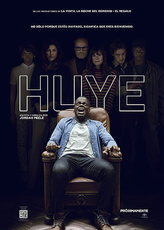

| |
Haunted Places | Paranormal Activities | Exorcisms & Possessions | Social Platforms | Horror Movies | Common Signs | Contact Us |
|---|
Cinema has always been the most powerful mirror for our deepest fears.
From subtle psychological thrillers to relentless supernatural terrors, horror films reveal the tension between the seen and the unseen — the rational and the inexplicable.
This collection explores landmark works that shaped the genre, blending artistry with unease, and storytelling with the supernatural. Each title has been selected for its impact, atmosphere, and enduring ability to disturb and provoke thought.
These are not just movies. They are experiences — glimpses into humanity’s fascination with darkness.
Some Of The Famous Horror Movies
🩸 1. The Conjuring (2013)
Plot: Paranormal investigators Ed and Lorraine Warren confront a malevolent presence tormenting the Perron family in their secluded Rhode Island farmhouse. As the haunting escalates, the Warrens uncover a dark history of witchcraft and possession tied to the land itself.
Why Watch: Meticulously crafted tension and authentic “based on true events” energy make this one of the defining supernatural films of the decade.
Where to Watch: Max (HBO), Amazon Prime Video, Apple TV

⚰️ 2. Insidious (2010)
Plot: When a young boy inexplicably slips into a coma, his family discovers his consciousness has wandered into a terrifying realm known as The Further — a dimension inhabited by restless spirits seeking a way into the living world.
Why Watch: A haunting mix of domestic drama and metaphysical horror, redefining ghost stories for modern audiences.
Where to Watch: Netflix, Amazon Prime Video
🪞 3. Hereditary (2018)
Plot: Following the death of their matriarch, a grieving family begins to unravel horrifying secrets about their ancestry. As a sinister presence tightens its grip, grief transforms into madness and ritualistic evil.
Why Watch: Ari Aster’s debut reshaped psychological horror with emotional weight, disturbing imagery, and relentless tension..
Where to Watch: Max (HBO), A24+, Apple TV

👁️ 4. The Exorcist (1973)
Plot: A young girl’s possession by an ancient demonic entity leads to a desperate spiritual battle between faith and evil. The ensuing exorcism becomes both a test of belief and a terrifying descent into the unknown.
Why Watch: A groundbreaking masterpiece that elevated horror into serious cinema and remains one of the most influential films ever made.
Where to Watch: Max (HBO), Apple TV, Amazon Prime Video
💀 5. Sinister (2012)
Plot: A struggling true-crime writer discovers a box of old home movies that depict brutal murders — and realizes a demonic entity known as Bughuul may be manipulating families across decades.
Why Watch: A study in dread and obsession; its visuals and sound design make it an exceptionally disturbing experience.
Where to Watch: Netflix, Amazon Prime Video

🕯️ 6. The Babadook (2014)
Plot: A widowed mother, exhausted by grief and her son’s erratic behavior, finds their lives consumed by a mysterious presence that emerges from a children’s storybook.
Why Watch: A powerful metaphor for grief and depression, told through atmospheric, restrained horror rather than cheap scares.
Where to Watch: Shudder, Amazon Prime Video
🔪 7. Halloween (1978)
Plot: Fifteen years after murdering his sister, Michael Myers escapes a mental institution and returns to his hometown, stalking teenager Laurie Strode on Halloween night.
Why Watch: John Carpenter’s minimalist direction and iconic score helped define the slasher genre and set a new standard for suspense.
Where to Watch: Peacock, Apple TV, Amazon Prime Video

🕸️ 8. The Ring (2002)
Plot: A journalist investigates a mysterious videotape said to kill its viewers seven days after watching. Her search reveals the tragic origin of a vengeful spirit seeking release through technology.
Why Watch: This eerie adaptation of the Japanese classic Ringu combines folklore and modern paranoia, creating a chillingly original curse myth.
Where to Watch: Paramount+, Apple TV, Amazon Prime Video
💀 9. The Blair Witch Project (1999)
Plot: Three film students venture into a Maryland forest to document the legend of the Blair Witch — and never return. Their recovered footage reveals their descent into fear, paranoia, and disorientation.
Why Watch: A pioneer of the “found footage” style that redefined realism in horror cinema and inspired countless imitators.
Where to Watch: Max (HBO), Amazon Prime Video, Apple TV

🧠 10. Get Out (2017)
Plot: A young Black man’s weekend visit to his white girlfriend’s family estate turns from awkward to horrifying as he uncovers a horrifying secret beneath their seemingly perfect hospitality.
Why Watch: Jordan Peele’s sharp social commentary on race, control, and identity turned horror into powerful cultural critique.
Where to Watch: Netflix, Amazon Prime Video, Apple TV
More Movies To Watch
11. Poltergeist (1982) – A suburban family discovers that their house is built on a graveyard. Ghostly phenomena escalate from eerie noises to full-blown hauntings, threatening their daughter.
12. The Shining (1980) – A writer takes a winter caretaker job at an isolated hotel. Surrounded by supernatural forces and isolation, his mental state deteriorates, leading to terrifying consequences.
13. Rosemary’s Baby (1968) – A young woman suspects a sinister plot surrounding her unborn child. Cults, paranoia, and dark rituals intertwine in this slow-burn psychological horror.
14. Paranormal Activity (2007) – A couple sets up cameras in their home to capture what seems to be a haunting. The found-footage style makes the escalating supernatural activity intensely immersive.
15. It Follows (2014) – A young woman is pursued by a supernatural entity that can take the appearance of anyone. The curse spreads through intimacy, creating constant suspense and dread.
16. The Autopsy of Jane Doe (2016) – Father-son coroners investigate a mysterious, seemingly corpse with no known cause of death. As they uncover secrets, supernatural occurrences escalate, trapping them in terror.
17. A Nightmare on Elm Street (1984) – Teenagers are stalked in their dreams by the vengeful Freddy Krueger. If they die in their dreams, the consequences are real and fatal.
18. The Grudge (2004 / remake of Japanese “Ju-On”) – Anyone who enters a haunted house is doomed by a deadly curse. A series of ghostly attacks unravel the lives of those who encounter it.
19. Ringu (1998) – Original version of The Ring, featuring a cursed videotape that brings death. Its eerie atmosphere and tension set a new standard for supernatural horror.
20. A Tale of Two Sisters (2003) – Two sisters return home to a stepmother who hides dark secrets. Supernatural elements and psychological tension intertwine in this haunting story.
Beyond The Veil |
||
|---|---|---|
|
Explore the unexplained and discover mysteries that challenge the ordinary. |
||
|
||
|
|